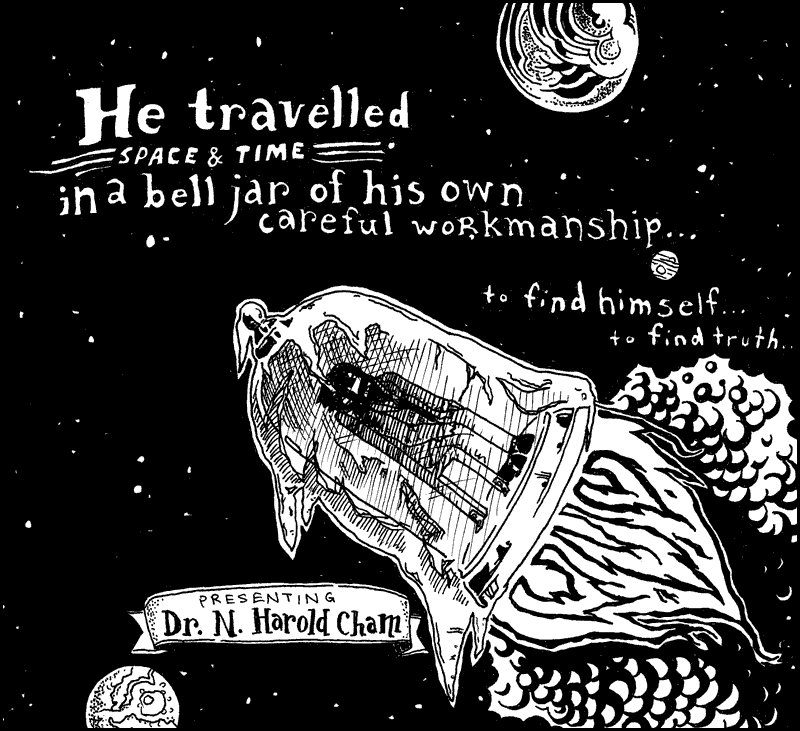

Frankly, I’m sick and tired of hearing that Dr. Cham was a madman. Yes, he tried to bury himself alive. Yes, he electrocuted his niece. Yes, in fact, he did dynamite a retirement home. But this was all with good cause and, in each case, I believe he took the correct course of action.
I’m sure you’d like to side with popular opinion, but you’re bound to feel some small trickle of admiration for him once he’s taken time to teach you all about Ruby’s class definitions. And moreso when you learn about mixins. And perhaps, by the end of the chapter, we can all start to look beyond the Doctor’s grievous past and stop calling him a madman.
So if you need to call him a madman, I’d start heading down to the train tracks to smash up some long fluorescent light bulbs. Get it out of your system right now, before we dig in.
1. This One’s For the Disenfranchised
If you give me a number, which is any year from Dr. Cham’s life, I’ll give you a synopsis of that time period. And I’ll do it as a Ruby method, so it’s an independent piece, an isolated chunk of code which can be hooked up to the voice of a robotic volcano, when such a thing becomes the apex of authoritative voice talents.
Okay, so I need you to notice def and case and when. You’ve seen the
Ranges, the closed accordions of 1895..1913, back in chapter 3. They contain
both ends and in between. And the backslashes at the end of each line simply
ignore the Enter key at the end of each line, assuring Ruby that there is
more of this line to come.
So, please: def and case and when.
def dr_chams_timeline( year )
case year
when 1894
"Born."
when 1895..1913
"Childhood in Lousville, Winston Co., Mississippi."
when 1914..1919
"Worked at a pecan nursery; punched a Quaker."
when 1920..1928
"Sailed in the Brotherhood of River Wisdomming, which journeyed \
the Mississippi River and engaged in thoughtful self-improvement, \
where he finished 140 credit hours from their Oarniversity."
when 1929
"Returned to Louisville to pen a novel about time-travelling pheasant hunters."
when 1930..1933
"Took up a respectable career insuring pecan nurseries. Financially stable, he \
spent time in Brazil and New Mexico, buying up rare paper-shell pecan trees. Just \
as his notariety came to a crescendo: gosh, he tried to buried himself alive."
when 1934
"Went back to writing his novel. Changed the hunters to insurance tycoons and the \
pheasants to Quakers."
when 1935..1940
"Took Arthur Cone, the Headmaster of the Brotherhood of River Wisdomming, as a \
houseguest. Together for five years, engineering and inventing."
when 1941
"And this is where things got interesting."
end
end
The def keyword. Here is our first method definition. A plain kernel
method, which can be used anywhere in Ruby. And how do we run it?
puts dr_chams_timeline( 1941 )
Which answers with “And this is where things got interesting.” It’s the same
story again and again: use your answers. I’ve set things up above so that the
case statement always answers with a string. And since the case statement is
the final (and only) statement in the method, then the method answers with that
string. Trickling water spilling down from ledge to ledge.
Let me be clear about the case statement. Actually, I should call it a
case..when statement, since they cannot be used separately. The case keyword
is followed by a value, which is compared against each of the values which
follow when keywords. The first value to qualify as a match is the one the
case uses and the rest are ignored. You can do the same thing with a bunch of
if..elsif statements, but it’s wordier.
case year
when 1894
"Born."
when 1895..1913
"Childhood in Lousville, Winston Co., Mississippi."
else
"No information about this year."
end
Is identical to:
if 1894 === year
"Born."
elsif (1895..1913) === year
"Childhood in Lousville, Winston Co., Mississippi."
else
"No information about this year."
end
The triple equals is a length of velvet rope, checking values much like the double equals. It’s just: the triple equals is a longer rope and it sags a bit in the middle. It’s not as strict, it’s a bit more flexible.
Take the Ranges above. (1895..1913) isn’t at all equal to 1905. No, the
Range (1895..1913) is only truly equal to any other Range (1895..1913).
In the case of a Range, the triple equals cuts you a break and lets the Integer
1905 in, because even though it’s not equal to the Range, it’s
included in the set of Integers represented by the Range. Which is good
enough in some cases, such as the timeline I put together earlier.
Which actually looked like a timeline, didn’t it? I mean, sure,
dr_chams_timeline method is code, but it does read like a timeline, clean and
lovely.
But Was He Sick??
You know, he had such bad timing. He was scattered as a novelist, but his ventures into alchemy were very promising. He had an elixir of goat’s milk and sea salt that got rid of leg aches. One guy even grew an inch on a thumb he’d lost. He had an organic health smoke that smelled like foot but gave you night vision. He was working on something called Liquid Ladder, but I’ve never seen or read anything else about it. It can’t have been for climbing. Who knows.
One local newspaper actually visited Dr. Cham. Their book reviewer gave him four stars. Really. She did an article on him. Gave him a rating.
Just know that Dr. N. Harold Cham felt terrible about his niece. He felt the shock treatment would work. The polio probably would have killed her anyway, but he took the chance.
On Sept. 9, 1941, after sedating her with a dose of phenacetin in his private operating room, he attached the conducting clips to Hannah’s nose, tongue, toes, and elbows. Assisted by his apprentice, a bespeckled undergraduate named Marvin Holyoake, they sprinkled the girl with the flakes of a substance the doctor called opus magnum. A white powder gold which would carry the current and blatantly energize the girl, forcing her blood to bloom and fight and vanquish.
But how it failed, oh, and how, when the lever was tossed, she arched and kicked—and KABLAM!—and BLOY-OY-OY-KKPOY! Ringlets of hair and a wall of light, and the bell of death rang. The experiment collapsed in a dire plume of smoke and her innocence (for weeks, everyone started out with, “And she will never have the chance…”) was a great pit in the floor and in their lungs.
To Hannah, I code.
opus_magnum = true
def save_hannah
success = opus_magnum
end
A method is its own island. And what goes on inside is unaffected by the simple
variables around it. Dr. Cham couldn’t breach the illness of his niece, no more
than an opus_magnum variable can penetrate the steely exterior of a method.
Should we run the save_hannah method, Ruby will squawk at us, claiming it sees
no opus_magnum.
I’m talking about scope. Microscopes narrow and magnify your vision. Telescopes extend the range of your vision. In Ruby, scope refers to a field of vision inside methods and blocks.
A method’s def statement opens its vision. Variable names introduced there
will be seen by the method and kept meaningful until its end closes its eyes.
You can pass data into a method by using arguments and data can be returned from
the method, but the names used inside the method are only good for its scope.
Some variables have wider scope. Global variables like $LOAD_PATH, which start
with a cash symbol, are available in any scope. Instance variables like
@names, which start with an at are available anywhere inside a class
scope. Same goes for class variables like @@tickets. Class and instance
variables will be explored in a moment.
Blocks have scope, but it’s a bit fuzzier. More flexible.
verb = 'rescued'
['sedated', 'sprinkled', 'electrocuted'].
each do |verb|
puts "Dr. Cham " + verb + " his niece Hannah."
end
puts "Finally, Dr. Cham " + verb + " his niece Hannah."
The block iterates (spins, cycles) through each of the Doctor’s actions. The
verb variable changes with each pass. In one pass, he’s sedating. In the next,
he’s powdering. Then, he’s electrocuting.
So, the question is: after the block’s over, will he have rescued Hannah?
Dr. Cham sedated his niece Hannah. Dr. Cham sprinkled his niece Hannah. Dr. Cham electrocuted his niece Hannah. Finally, Dr. Cham rescued his niece Hannah.
Blocks are allowed to see variables in the vicinity. But this block has its own
verb variable which is updated each cycle. When the block completed and its
tiny life ended, the outer verb stayed the same as it were before.
This is the nature of local variables. When its scope closes, the variable
goes away with it. Say that verb wasn’t used before the block.
['sedated', 'powdered', 'electrocuted'].
each do |verb|
puts "Dr. Cham " + verb + " his niece Hannah."
end
puts "Yes, Dr. Cham " + verb + " his niece Hannah."
Pulls an error: undefined local variable or method `verb'. Poof. The inner
variable won’t leak outside its scope.
It must be something difficult, even for a great scientist, to carry away the corpse of a young girl whose dress is still starched and embroidered, but whose mouth is darkly clotted purple at the corners. In Dr. Cham’s journal, he writes that he was tormented by her ghost, which glistened gold and scorched lace. His delusions grew and he ran from hellhounds and massive vengeful, angelic hands.
Only weeks later, he was gone, propelled from these regrets, vanishing in the explosion that lifted him from the planet.
And even as you are reading this now, sometime in these moments, the bell jar craft of our lone Dr. Cham touched down upon a distant planet after a sixty year burn. As the new world came into view, as the curvature of the planet widened, as the bell jar whisked through the upset heavens, tearing through sheets of aurora and solar wind, Dr. Cham’s eyes were shaken open.
What you are witnessing is the landing of Dr. Cham on the planet Endertromb. From what I can gather, he landed during the cusp of the Desolate Season, a time when there really isn’t much happening on the planet. Most of the inhabitants find their minds locked into a listless hum which causes them to disintegrate into just vapid ghosts of one-part-wisdom and three-parts-steam for a time.
My modest grasp of the history and climate of Endertromb has been assembled from hanging around my daughter’s organ instructor, who grew up on the planet.
I frequently drill my daughter’s organ instructor in order to ensure that he can keep appointments adequately. That he can take house calls at odd hours and promptly answer emergency calls. When he finally revealed to me that he was an alien whose waking day consisted of five-hundred and forty waking hours, I was incredibly elated and opened a contractual relationship with him which will last into 2060.
For three days (by his pocket watch’s account), Dr. Cham traveled the dark shafts of air, sucking the dusty wind of the barren planet. But on the third day, he found the Desolate Season ending and he awoke to a brilliant vista, decorated with spontaneous apple blossoms and dewy castle tiers.
2. A Castle Has Its Computers
Our intrepid Doctor set off for the alien castle, dashing through the flowers. The ground belted past his heels. The castle inched up the horizon. He desired a stallion, but no stallion appeared. And that’s how he discovered that the planet wouldn’t read his mind and answer his wishes.
As my daughter’s organ instructor explained it, however, the planet could read minds and it could grant wishes. Just not both at the same time.
One day as I quizzed the organ maestro, he sketched out the following Ruby code on a pad of cheese-colored paper. (And queer cheese smells were coming from somewhere, I can’t say where.)
require 'endertromb'
class WishMaker
def initialize
@energy = rand( 6 )
end
def grant( wish )
if wish.length > 10 or wish.include? ' '
raise ArgumentError, "Bad wish."
end
if @energy.zero?
raise Exception, "No energy left."
end
@energy -= 1
Endertromb::make( wish )
end
end
This is the wish maker.
Actually, no, this is a definition for a wish maker. To Ruby, it’s a class definition. The code describes how a certain object will work.
Each morning, the wish maker starts out with up to five wishes available for
granting. A new WishMaker is created at sun up.
todays_wishes = WishMaker.new
The new method is a class method which creates a new, blank object. It also
calls the object’s initialize method automatically. In the WishMaker
definition, you’ll see the initialize method, which contains a single line of
code: @energy = rand( 6 ).
The rand( 6 ) picks a number between 0 and 5. This number will represent the
number of wishes left in the day. So, occasionally there are no wishes
available from the wish maker.
The random number is assigned to an instance variable which is named
@energy. This instance variable will be available any time throughout the
class. The variable can’t be used outside the scope of the class.
In chapter three, we briefly looked at instance variables and decided to respect them as attributes. (The at symbol could mean attribute.) Instance variables can be used to store any kind of information, but they’re most often used to store bits of information about the object represented by the class.
In the above case, each wish maker for the day has its own energy level. If the
wish maker were a machine, you might see a gauge on it that points to the energy
left inside. The @energy instance variable is going to act as that gauge.
todays_wishes = WishMaker.new
todays_wishes.grant( "antlers" )
Okay, step back and ensure you understand the example here. The WishMaker
class is an outline we’ve laid out for how the whole magic wish program works.
It’s not the actual genie in the bottle, it’s the paperwork behind the scenes.
It’s the rules and obligations the genie has to live by.
It’s todays_wishes that’s the genie in the bottle. And here we’re giving it a
wish to grant. Give us antlers, genie. (If you really get antlers from this
example, I don’t want to hear about it. Go leap in meadows with your own kind
now.)
In the last chapter, the drill was: Ruby has two halves.
- Defining things.
- Putting those things into action.
What are the actions in Ruby? Methods. And now, you’re having a lick of the
definition language built-in to Ruby. Method definitions using def. Class
definitions using class.
At this point in your instruction, it’s easier to understand that everything in Ruby is an object.
number = 5
print number.next # prints '6'
phrase = 'wishing for antlers'
print phrase.length # prints '19'
todays_wishes = WishMaker.new
todays_wishes.grant( "antlers" )
And, consequently, each object has a class behind the scenes.
print 5.class # prints 'Integer'
print 'wishing for antlers'.class # prints 'String'
print WishMaker.new.class # prints 'WishMaker'
Dr. Cham never saw the wish maker as he hustled across the landspace. It lay far beyond his landing in the valley of Sedna. Down sheer cliffs stuffed with layers of thicket, where you might toss your wish (written on a small 1” x 6” slip), down into the gaping void. Hopefully it will land on a lizard’s back, sticking to its spindly little horn.
And let’s say your wish makes it that far. Well, then, down the twisted wood goes the skinny salamander, scurrying through the decaying churches which had been pushed over that steep canyon ledge once and for all. And the expired priest inside, who weathered the fall as well, will kill the little amphibian—strangle it to death with a blessed gold chain—and save it for the annual Getting To Know You breakfast. He’ll step on your precious little wish and, when the thieves come, that slip will still be there, stuck on his sole. Of course, the thieves’ preferred method of torture is to cut a priest in thin deli-shaved slices from top to bottom. Who can cull evidence from that? And when they chop that last thin slice of shoe sole, they’ll have that rubber scalp in hand for good luck and good times. But they canoe much too hard, these thieves. They slap their paddles swiftly in the current to get that great outboard motor mist going. But the shoe sole is on a weak chain, tied to one man’s belt. And a hairy old carp leaps, latches on to that minute fraction of footwear. And the thieves can try, but they don’t see underwater. If they could, they’d see that mighty cable, packed with millions of needly fiber optics. Indeed, that fish is a peripheral plugged right into the core workings of the planet Endertromb. All it takes is one swallow from that fish and your wish is home free!
And that’s how wishes come true for children in this place.
Once my daughter’s organ instructor had drawn up the class for the wish maker, he then followed with a class for the planet’s mind reader.
require 'endertromb'
class MindReader
def initialize
@minds = Endertromb::scan_for_sentience
end
def read
@minds.collect do |mind|
mind.read
end
end
end
Much as you’ve seen before, the initialize happens when a new MindReader
object is created. This initialize gathers scans of the planet for mindshare.
It looks like these minds are stored in an array, since they are later iterated
over using the collect method.
Both the wish maker and the mind reader refer to a class named Endertromb.
This class is stored in a file endertromb.rb, which is loaded with the code:
require 'endertromb'. Often you’ll use other classes to accomplish part of
your task. Most of the latter half of this book will explore the wide variety of
helpful classes that can be loaded in Ruby.
Dr. Cham Ventures Inside
But as Dr. Cham neared the castle, although the planet was aware of his thoughts, sensing his wonderment and anticipation, all Dr. Cham felt was deadness. He tromped up the steps of its open gate and through the entrance of the most beautiful architecture and was almost certain it was deserted.
For a while he knocked. Which paid off.
He watched the baby whale rise like a determined balloon. He marveled at his first alien introduction and felt some concern that it had passed so quickly. Well, he would wait inside.
As he stepped through the castle door, he felt fortunate that the door hadn’t been answered by a huge eagle with greedy talons, eager to play. Or a giant mouse head. Or even a man-sized hurricane. Just a tubby little choo-choo whale.
“Not a place to sit down in this castle,” he said.
At first, he had thought he had just entered a very dim hallway, but as his eyes adjusted, he saw the entrance extended into a tunnel. The castle door had opened right into a passage made of long, flat slabs of rock. Some parts were congruous and resembled a corridor. Other parts narrowed, and even tilted, then finally tipped away out of view.
The passage was lit by small doorless refrigerators, big enough to hold an armful of cabbage, down by his feet. He peered inside one, which was hollow, illuminated along all sides, and turning out ice shards methodically.
He pawed the ice chips, which clung dryly to his fingertips, and he scrubbed his hands in the ice. Which left some muddy streaks on his hands, but satisfied a small part of his longing to bathe. How long had it been? Ten years? Thirty?
Along the passage, long tubes of cloth cluttered some sections. Later, bright pixel matter in porcelain scoops and buckets.
He happened upon a room which had been burrowed out of the tunnel which had a few empty turtle shells on the ground and a large illuminated wall. He stared into the room, bewildered. What could this be? In one state of mind, he thought of having a seat on a shell. This could be the entrance at last, some kind of receiving room. On the other hand, spiders could pour out of the shell’s hollow when he sat. He moved on.
Meal in a Castle’s Pocket
As he journeyed along the passageways (for the central tunnel forked and joined larger, vacuous caverns), he picked up themes in some locations. Groups of rooms infested with pumping machinery. Cloth and vats of glue dominated another area. He followed voices down a plush, pillowed cavity, which led him to a dead end: a curved wall with a small room carved at eye-level.
He approached the wall and, right in the cubby hole, were two aardvarks eating at a table.
They gazed at him serenely, both munching on some excavated beetle twice their size, cracked open and frozen on its back on the table.
“Hello, little puppets,” he said, and they finished their bites and kept looking with their forks held aloof.
“I wish my niece Hannah were here to meet you,” he told the attentive miniature aardvarks. “She’d think you were an intricate puppet show.” He peered in at the dining area, shelves with sets of plates, hand towels. Half of a tiny rabbit was jutting out from the top a machine, creamy red noodles were spilling out underneath it. A door at the back of the room hung ajar. Dr. Cham could see a flickering room with chairs and whirring motors through the door.
“Any child would want this dollhouse,” he said. “Hannah, my niece, as I mentioned, she has a wind-up doll that sits at a spindle and spins yarn. It’s an illusion, of course. The doll produces no yarn at all.”
One of the aardvarks opened a trapdoor in the floor and pressed a button down inside, which lit. Then, a small film projector slowly came up on a rod. The other aardvark sat and watched Dr. Cham.
“But Hannah still reaches down into the dollhouse and collects all the imaginary yarn into a bundle. Which she takes to her mother, my sister, who is very good at humoring Hannah. She sews a dress to the doll’s dimensions, which Hannah takes back to the doll.
“And she tells the doll, ‘Here, look, your hard work and perseverance has resulted in this beautiful dress. You can now accept the Chief of Police’s invitation to join him tonight at the Governor’s Mansion.’ And she has a doll in a policeman’s uniform who plays the part of the Chief. He’s too scrawny to be an actual Chief, that would require quite a bit of plastic.”
The aardvark responsible for the film projector loaded a reel and aimed the projector at the back wall. The film spun to life and the aardvark took a seat. A green square appeared on the wall. The attentive aardvark stared at Dr. Cham still.
“Your films are colored,” said Dr. Cham. “What a lovely, little life.”
The film played on: a blue square. Then, a red circle. Then, an orange square. The attentive aardvark turned away, watched the screen change to a pink triangle, and both aardvarks resumed eating.
A purple star. A red square. With quietness settling, Dr. Cham could hear notes droning from the projector. Like a slow, plodding music box trying to roll its gears along the train tracks.
“Yes, enjoy your supper,” said Dr. Cham and he politely tipped his head away, marching back up the path he’d taken.
Another Dead End Where Things Began
He found himself lost in the castle’s tunnels. Nothing looked familiar. He wasn’t worried much, though. He was on another planet. He would be lost regardless.
He wound through the tunnels, attempting to recall his paths, but far too interested in exploring to keep track of his steps. He followed a single tunnel deep, down, down, which slanted so steeply that he had to leap across ledges and carefully watch his footholds. The gravity here seemed no different than Earth. His legs were pulled into slides just as easily.
Although he had no absolute way of knowing where he was, he felt certain that he had left the castle’s boundaries. This deep, this long of a walk. It had been an hour since he’d entered through the door. And, as the tunnel wound back up, he was sure that he would emerge into a new dwelling, perhaps even a manhole which he could peek out from and see the castle. Perhaps he shouldn’t have come so far down this route. He hoped nothing was hibernating down here.
The tunnel came to a stop. A dark, dead end.

He had time. So he read the book. He read of the foxes and their pursuit of the porcupine who stole their pickup truck. He read of the elf and the ham. He saw the pictographs of himself and found he could really relate to his own struggles. He even learned Ruby. He saw how it all ended.
Were I him, I couldn’t have stomached it. But he did. And he pledged in his bosom to see things out just as they happened.
On the computer monitor, Dr. Cham saw the flashing irb prompt. Like Dr. Cham,
you might recognize the irb prompt from The Tiger’s Vest (the first
expansion pak to this book, which includes a basic introduction to Interactive
Ruby.)
Whereas he had just been exploring tunnels by foot, he now explored the machine’s setup with the prompt. He set the book back where he had found it. He didn’t need it anymore. This was all going to happen whether he used it or not.
He started with:
irb> Object::constants
=> ["Marshal", "String", "Dir", "LoadError", "Float", ... and so on ]
This command lists all the top-level constants. Classes are also listed as constants, so this list can be great to see what’s loaded into Ruby at any time.
He scanned the list for anything unfamiliar. Any classes which didn’t come with
Ruby. Marshal, String, Dir, LoadError, Float. Each of those came with
Ruby.
But further down the list:
... "Struct", "Values", "Time", "Elevator", "Range" ...
Elevator? Exactly the kind of class to poke around with. He had a go.
irb> Elevator::methods
=> ["method", "freeze", "allocate", ... another long list ... ]
irb> Elevator::class_variables
=> ['@@diagnostic_report', '@@power_circuit_active', '@@maintenance_password']
irb> Elevator::constants
=> []
Looks like the Elevator class had plenty of methods. Most of these looked like
they were the same methods every object has in Ruby. For example, method,
freeze and allocate come with every class in Ruby. (Elevator::freeze would
keep the Elevator class from being changed. Elevator::allocate would make a
new Elevator object without calling the initialize method.)
The class_variables were interesting to Dr. Cham. This elevator appeared
genuine. But no available constants. This tells us there are no classes nested
inside the Elevator class.
He tried to create an Elevator object.
irb> e = Elevator::new
ArgumentError: wrong number of arguments (0 for 1), requires a password
from (irb):2:in `initialize'
from (irb):2:in `new'
from (irb):2
from :0
He tried a few passwords.
irb> e = Elevator::new( "going up" )
AccessDeniedError: bad password
irb> e = Elevator::new( "going_up" )
AccessDeniedError: bad password
irb> e = Elevator::new( "stairs_are_bad" )
AccessDeniedError: bad password
irb> e = Elevator::new( "StairsAreBad" )
AccessDeniedError: bad password
That was useless. Oh, wait! The maintenance password. Listed in the class_variables.
irb> Elevator::maintenance_password
NoMethodError: undefined method `maintenance_password' for Elevator:Class
from (irb):1
from :0
Hmm. Instance variables are only available inside an object. And class variables are only available inside a class. How to get at that password?
irb> class Elevator
irb> def Elevator.maintenance_password
irb> @@maintenance_password
irb> end
irb> end
=> nil
irb> Elevator::maintenance_password
=> "stairs_are_history!"
Alright! He got the password. Did you see that?
He added a class method to the Elevator class. Isn’t that great how you can
start a new class definition for Elevator and Ruby just adds your changes to
the existing class definition?
Class methods are usually called with the double colon. But, a period is
fine as well. Since Elevator is a class itself, Ruby will figure that if you
call Elevator.maintenance_password, you’re calling a class method. The double
colon simply helps make class methods obvious to the reader.
And justly so. Class methods are a bit unusual. Normally you won’t want to store
information directly inside of a class. However, if you have a bit of
information that you need to share among all objects of a class, then you have a
good reason to use the class for storage. It’s understandable that the
@@maintenance_password would be stored in the class, instead of in each
separate object. This way, the objects can simply reach up into the class and
see the shared password.
Here’s probably how the password protection works.
class Elevator
def initialize( pass )
raise AccessDeniedError, "bad password" \
unless pass.equals? @@maintenance_password
end
end
Passwording a class like this is pointless, since anything in Ruby can be altered and overwritten and remolded. Dr. Cham had the password and ownership of the elevator is his.
irb> e = Elevator.new( "stairs_are_history!" )
#<Elevator:0x81f12f4 @level=4>
irb> e.level = 1
Dr. Cham was standing right there when the elevator doors, off behind the computer terminal, opened for him. With an exasperated sense of accomplishment and a good deal of excitement surrounding all of the events that lie ahead, he stepped into the elevator and pressed 4.
3. The Continued Story of My Daughter’s Organ Instructor
I know you may be alarmed to hear that I have a daughter. You think my writing is indicative of a palsied or infantile mind. Well, please rest. I don’t have a daughter. But I can’t let that stop me from sorting out her musical training.
As I was related these elaborate histories of the planet Endertromb, I found myself wandering through hallways, running my fingertips along the tightly buttoned sofas and soaking myself in the saturated bellowings of the pipes, as played by my daughter’s organ instructor. His notes resounded so deep and hollow in the walls of his manor that I began to casually mistake them for an ominous silence, and found it even easier to retreat into deep space with my thoughts. To think upon the ancient planet and its darker philosophies: its flesh temples, tanned from the dermal remains of its martyrs; its whale cartels, ingesting their enemies and holding them within for decades, dragging them up and down the staircases of ribs; its poison fogs and its painful doorways; and, the atrocious dynasties of The Originals, the species which claims fathership to all of the intelligent beings across the universe.
But, eventually, I’d hear those pipes of a higher octave sing and I’d be back in the very same breezy afternoon where I’d left.
How interesting that even the breeze of our planet is quite a strange thing to some outsiders. For he had also told me of the travelers from Rath-d, who ventured to Earth five centuries ago, but quickly dissipated in our air currents since they and their crafts and their armor were all composed of charcoal.
I had sat at the organ, listening to his faint tales of his colony, while he punctuated his symphonies to greater volumes and the story would disappear for awhile, until the coda came back around. He spoke of he and his brothers piling into the hollow of his mother’s tail and tearing the waxy crescent tissue from the inner wall. Juicy and spongy and syrupy soap which bleached their mouths and purged their esophagus as it went down. They chewed and chomped the stuff and it foamed. After they ate, they blew bubbles at each other, each bubble filled with a dense foam, which they slept upon. And early in the morning, when mother opened her tail again, she watched serenely as her babies lay cradled in the stew of dark meatballs and sweet, sticky froth.
He spelled out all the tastes of Endertromb. Of their salmon’s starchy organs, which cooked into a pasta, and its eyes which melted into rich cream. Of their buttermelon with tentacles. And he was just beginning to appreciate the delicacies as a child, only to be lifted from a schoolyard by a pair of upright pygmy elephants who reached at him, through the heavens, and snatched upon his collar with a vast length of crane.
They transplanted him on Earth, led him from their craft, trumpeting their snouts loudly for the city of Grand Rapids to hear, then left, weeping and embracing each other.
“But, strangely (em-pithy-dah), I learned upon, played upon (pon-shoo) the organs on my home (oth-rea) planet,” he said.
My daughter’s organ instructor speaks these extra words you see in parentheses. Who knows if they are from his native tongue or if they are his own soundful hiccups. He keeps another relic from Endertromb as well: he has twelve names.
“No, (wen-is-wen),” he said. “I have one name (im-apalla) which is said (iff) many-many different ways.”
I call him Paij-ree in the morning and Paij-plo in the later evening. Since it is day as I write, I will call him Paij-ree here.
Mumble-Free Earplugs
So I told Paij-ree, “Paij-ree, I am writing a book. To teach the world Ruby.”
“Oh, (pill-nog-pill-yacht) nice,” he said. He’s known Ruby longer than I have, but still: I will be my daughter’s Ruby instructor.
And I said, “Paij-ree, you are in the book. And the stories of your planet.” I talk to him like he’s E.T. I don’t know why. Just like how I said next, “And then maybe someday you can go home to your mom and dad!”
To which he said, “(pon-shoo) (pon-shoo) (em-pithy-dah).” Which is his way of speaking out loud his silence and awe.
He wanted to see what I’d written, so I showed him this short method I’ve written for you.
def wipe_mutterings_from( sentence )
while sentence.include? '('
open = sentence.index( '(' )
close = sentence.index( ')', open )
sentence[open..close] = '' if close
end
end
“Can you see what this does, Paij-ree? Any old Smotchkkiss can use this method to take all the incoherent babblings out of your speaking,” I said.
And I fed something he said earlier into the method.
what_he_said = "But, strangely (em-pithy-dah),
I learned upon, played upon (pon-shoo) the
organs on my home (oth-rea) planet."
wipe_mutterings_from( what_he_said )
print what_he_said
And it came out as a rather plain sentence.
But, strangely ,
I learned upon, played upon the
organs on my home planet.
“You shouldn’t use that (wary-to) while loop,” he said. “There are lovelier, (thopt-er), gentler ways.”
In the wipe_mutterings_from method, I’m basically searching for opening
parentheses. When I find one, I scan for a closing paren which follows it. Once
I’ve found both, I replace them and their contents with an empty string. The
while loop continues until all parentheses are gone. The mutterings are
removed and the method ends.
“Now that I look at this method,” I said. “I see that there are some confusing aspects and some ways I could do this better.” Please don’t look down on me as your teacher for writing some of this code. I figure that it’s okay to show you some sloppy techniques to help you work through them with me. So let’s.
Okay, Confusing Aspect No. 1: This method cleans a string. But what if we
accidentally give it a File? Or a number? What happens? What if we run
wipe_mutterings_from( 1 )?
If we give wipe_mutterings_from the number 1, Ruby will print the following
and exit.
NoMethodError: undefined method `include?' for 1:Fixnum
from (irb):2:in `wipe_mutterings_from'
from (irb):8
What you see here is a rather twisted and verbose (but at times very helpful) little fellow called the backtrace. He’s a wound-up policeman who, at the slightest sign of trouble, immediately apprehends any and all suspects, pinning them against the wall and spelling out their rights so quickly that none can quite hear it all. But it’s plain that there’s a problem. And, of course, it’s all a big misunderstanding, right?
When Ruby reads you these Miranda rights, listen hardest to the beginning. The
first line is often all you need. In this first line is contained the essential
message. And in the above, the first line is telling us that there is no
include? method for the number 1. Remember, when we were talking about the
reverse method in the last chapter? Back then, I said, “a lot of methods are
only available with certain types of values.” Both reverse and include?
are methods which work with strings but are meaningless and unavailable for
numbers.
To be clear: the method tries to use to the number. The method will start with
sentence set to 1. Then, it hits the second line: while sentence.include?
'('. Numbers have no include? method. Great, the backtrace has shown us where
the problem is. I didn’t expect anyone to pass in a number, so I’m using methods
that don’t work with numbers.
See, this is just it. Our method is its own little pocket tool, right? It
acts as its own widget independent of anything else. To anyone out there using
the wipe_mutterings_from method, should they pass in a number, they’ll be
tossed this panic message that doesn’t make sense to them. They’ll be asked to
poke around inside the method, which really isn’t their business. They don’t
know their way around in there.
Fortunately, we can throw our own errors, our own exceptions, which may make more sense to someone who inadvertently hands the wrong object in for cleaning.
def wipe_mutterings_from( sentence )
unless sentence.respond_to? :include?
raise ArgumentError,
"cannot wipe mutterings from a #{ sentence.class }"
end
while sentence.include? '('
open = sentence.index( '(' )
close = sentence.index( ')', open )
sentence[open..close] = '' if close
end
end
This time, if we pass in a number (again, the number 1), we’ll get something more sensible.
ArgumentError: cannot wipe mutterings from a Fixnum
from (irb):3:in `wipe_mutterings_from'
from (irb):12
The respond_to? method is really nice and I plead that you never forget it’s
there. The respond_to? checks any object to be sure that it has a certain
method. It then gives back a true or false. In the above case, the incoming
sentence object is checked for an include? method. If no include? method
is found, then we raise the error.
You might be wondering why I used a symbol with respond_to?. I used a symbol
:include? instead of a string 'include?'. Actually, either will work with
respond_to?.
Usually symbols are used when you are passing around the name of a method or any
other Ruby construct. It’s more efficient, but it also catches the eye. The
respond_to? asks Ruby to look inside itself and see if a method is available.
We’re talking to Ruby, so the symbol helps denote that. It’s not a big deal,
Ruby just recognizes symbols quicker than strings.
Now, Confusing Aspect No. 2: Have you noticed how our method changes the sentence?
something_said = "A (gith) spaceship."
wipe_mutterings_from( something_said )
print something_said
Did you notice this? In the first line of the above code, the something_said
variable contains the string "A (gith) spaceship.". But, after the method
invocation, on the third line, we print the something_said variable and by
then it contains the cleaned string "A spaceship.".
How does this work? How does the method change the string? Shouldn’t it make a copy of the string before changing it?
Yes, absolutely, it should! It’s bad manners to change strings like that.
We’ve used gsub and gsub! in the last chapter. Do you remember which of
those two methods is a destructive method, which changes strings directly?
Either we need to call this method wipe_mutterings_from! (as a courtesy to all
the other good folks out there that might use this method) or change the method
to work on a copy of the string rather than the real thing. Which is an easy
change! We just need to dup the string.
def wipe_mutterings_from( sentence )
unless sentence.respond_to? :include?
raise ArgumentError,
"cannot wipe mutterings from a #{ sentence.class }"
end
sentence = sentence.dup
while sentence.include? '('
open = sentence.index( '(' )
close = sentence.index( ')', open )
sentence[open..close] = '' if close
end
sentence
end
The dup method makes a copy of any object. Look at that line we added again on
its own:
sentence = sentence.dup
What a peculiar line of code. How does sentence become a copy of sentence?
Does it erase itself? What happens to the original sentence? Does it
disappear?
Remember that variables are just nicknames. When you see sentence = "A (gith)
spaceship.", you see Ruby creating a string and then giving that string a
nickname.
Likewise, when you see sentence = sentence.dup, you see Ruby creating a new
string and then giving that string a nickname. This is handy inside your method
because now sentence is a nickname for a new copy of the string that you can
safely use without changing the string that was passed into the method.
You’ll see plenty of examples of variable names being reused.
x = 5
x = x + 1
# x now equals 6
y = "Endertromb"
y = y.length
# y now equals 10
z = :include?
z = "a string".respond_to? z
# z now equals true
And, yes, sometimes objects disappear. If you can’t get to an object through a variable, then Ruby will figure you are done with it and will get rid of it. Periodically, Ruby sends out its garbage collector to set these objects free. Every object is kept in your computer’s memory until the garbage collector gets rid of it.
Oh, and one more thing about dup. Some things can’t be dup’d. Numbers, for
instance. Symbols (which look like :death) are identical when spelled the
same. Like numbers.
Also, some of the special variables: nil, true, false. These are things
that Ruby won’t let you alter, so there’s so point making a copy anyway. I mean,
imagine if you could change false to be true. The whole thing becomes a lie.
Perhaps Confusing Aspect No. 3 is a simple one. I’m using those square
brackets on the string. I’m treating the string like it’s an Array or Hash. I
can do that. Because strings have a [] method.
When used on a string, the square brackets will extract part of the string. Again, slots for a forklift’s prongs. The string is a long shelf and the forklift is pulling out a slab of the string.
Inside the brackets, we pass the index. It’s the label we’ve placed right between the prongs where the worker can see it. When it comes to strings, we can use a variety of objects as our index.
str = "A string is a long shelf of letters and spaces."
puts str[0] # prints 'A'
puts str[0..-1] # prints 'A string is a long shelf of letters and spaces.'
puts str[1..-2] # prints ' string is a long shelf of letters and spaces'
puts str[0, 3] # prints 'A s'
puts str['shelf'] # prints 'shelf'
Alright, the last Confusing Aspect No. 4: this method can be sent into an endless loop. You can give this method a string which will cause the method to hang and never come back. Take a look at the method. Can you throw in a muddy stick to clog the loop?
def wipe_mutterings_from( sentence )
unless sentence.respond_to? :include?
raise ArgumentError,
"cannot wipe mutterings from a #{ sentence.class }"
end
sentence = sentence.dup
while sentence.include? '('
open = sentence.index( '(' )
close = sentence.index( ')', open )
sentence[open..close] = '' if close
end
sentence
end
Here, give the muddy stick a curve before you jam it.
muddy_stick = "Here's a ( curve."
wipe_mutterings_from( muddy_stick )
Why does the method hang? Well, the while loop waits until all the open
parentheses are gone before it stops looping. And it only replaces open
parentheses that have a matching closing parentheses. So, if no closing paren is
found, the open paren won’t be replaced and the while will never be satisfied.
How would you rewrite this method? Me, I know my way around Ruby, so I’d use a regular expression.
def wipe_mutterings_from( sentence )
unless sentence.respond_to? :gsub
raise ArgumentError,
"cannot wipe mutterings from a #{ sentence.class }"
end
sentence.gsub( /\([-\w]+\)/, '' )
end
Do your best to think through your loops. It’s especially easy for while and
until loops to get out of hand. Best to use an iterator. And we’ll get to
regular expressions in time.
In summary, here’s what we’ve learned about writing methods:
- Don’t be surprised if people pass unexpected objects into your methods. If
you absolutely can’t use what they give you,
raisean error. - It’s poor etiquette to change objects your method is given. Use
dupto make a copy. Or find a method likegsubthat automatically makes a copy as it does its job. - The square brackets can be used to lookup parts inside any
Array,HashorStringobjects, as these objects provide a[]method. Also, since these objects provide a[]=method, the square brackets can be used in assignment (on the left-hand side of the equals sign) to change the parts of those objects. - Watch for runaway loops. Avoid
whileanduntilif you can.
The Mechanisms of Name-Calling
Forthwith there is a rustling in the trees behind Paij-ree’s house and it turns out to be a man falling from the sky. His name is Doug and he sells cats.
So, just as he comes into to view, when his shadow (and the shadows of the cats tied to his foot) obscures the bird on the lawn that we’re trying to hit with a racquetball, as he’s squeezing a wisp of helium from his big balloon, we shout, “Hello, Doug!”
And he says, “Hello, Gonk-ree! Hello, Why!”
Paij-ree checks his pockets to be sure he has the dollar-twenty-seven he’ll need in order to buy the three cats he’ll need to keep the furnace stoked and the satellite dish turning. These cats generate gobs of static once Paij-ree tosses them in the generator, where they’ll be outnumbered by the giant glass rods, which caress the cats continually—But, wait! Did you see how the cat broker called him Gonk-ree?
And he calls him Gonk-ree in the morning and Gonk-plo at night.
So the suffix is definitely subject to the sunlight. As far as I can tell, the prefix indicates the namecaller’s relationship to Paij-ree.
class String
# The parts of my daughter's organ
# instructor's name.
@@syllables = [
{ 'Paij' => 'Personal',
'Gonk' => 'Business',
'Blon' => 'Slave',
'Stro' => 'Master',
'Wert' => 'Father',
'Onnn' => 'Mother' },
{ 'ree' => 'AM',
'plo' => 'PM' }
]
# A method to determine what a
# certain name of his means.
def name_significance
parts = self.split( '-' )
syllables = @@syllables.dup
signif = parts.collect do |p|
syllables.shift[p]
end
signif.join( ' ' )
end
end
Now I’ve gone beyond just showing you sloppy code. Here be a grave debauchery
and a crime against nature. A crime most languages won’t allow you to commit.
We’re changing the String, one of the core classes of Ruby!
“I know this is a bit dangerous,” I said, when I passed this one under Paij-ree’s nose. “I hope nobody gets hurt.”
“Every Smotchkkiss must taste what this (kep-yo-iko) danger does,” he said. “Dogs and logs and swampy bogs (kul-ip), all must be tasted.” And he took a swig of his Beagle Berry marsh drink.
So what is it that I’m adding to the String class? Two things: a class
variable and a method. A normal instance method.
I like to look at the at symbol as a character meaning attribute. The
double at stands for attribute all. A class variable. All instances of a
class can look at this variable and it is the same for all of them. The
@@syllables variable is an Array that can now be used inside the String class.
The new method is name_significance and this new method can be used with any
string.
print "Paij-ree".name_significance
#=> Personal AM
As you can see, Paij-ree is a personal name. A name friends use in the early hours.
Make sure you see the line of code which uses self. This is a special
variable, a variable which represents the object whose method you are calling.
To simplify things a bit, let’s try making a method which breaks up a string on
its dashes.
class String
def dash_split
self.split( '-' )
end
end
Again, here’s a method which can be used with any string.
"Gonk-plo".dash_split
#=> ['Gonk', 'plo']
Using self marks the beginning of crossing over into many of the more advanced
ideas in Ruby. This is definition language. You’re defining a method, designing
it before it gets used. You’re preparing for the existence of an object which
uses that method. You’re saying, “When dash_split gets used, there will be a
string at that time which is the one we’re dash-splitting. And self is a
special variable which refers to that string.”
Ruby is a knockout definition language. A succulent and brain-splitting discussion is coming your way deeper in this book.
Most often you won’t need to use self explicitly, since you can call methods
directly from inside other method definitions.
class String
def dash_split; split( '-' ); end
end
In the name_significance method, find the loop. Learning about Array#collect
is essential. Let’s look close.
signif = parts.collect do |p|
syllables.shift[p]
end
The parts Array contains the separated name. ['Paij', 'plo'], for instance.
We’re iterating through each item in that Array with collect. But collect
steps beyond what each does. Like each, collect slides each item down the
chute as a block variable. And then, at the end of the block, collect keeps
the answer the block gives back and adds it to a new Array. The collect
method is the perfect way of building a new Array which is based on the items in
an existing Array.
Doug has three cats for sale. One is twelve cents, one is sixty-three cents, one is nine cents. Let’s see how much each cat would cost if we added a 20% tip.
catsandtips = [0.12, 0.63, 0.09].collect { |catcost| catcost + ( catcost * 0.20 ) }
I say Paij-ree’s property is a very charming section of woods when it’s not raining cats and Doug. For many days, Paij-ree and I camped in tents by the river behind his house, subsisting on smoked blackbird and whittling little sleeping Indians by the dusklight. On occasion he would lose a game of spades and I knew his mind was distracted, thinking of Endertromb. All of this must have been stirring inside of him for sometime. I was the first ear he’d ever had.
“I just came from Ambrose,” I said. “Sort of my own underground home, a place where elves strive to perfect animals.”
He mumbled and nodded. “You can’t be (poth-in-oin) part of (in) such things.”
“You think we will fail?”
“I (preep) have been there before,” he said. And then, he spoke of the Lotteries.
4. The Goat Wants to Watch a Whole Film
The elevator had opened into a green room full of shelves and file cabinets. Reels of tape and film canisters and video tape everywhere. Dr. Cham hadn’t a clue what most of it was. All he saw was a big, futuristic mess.
He called out again, stumbling through alleys of narrow shelves, “Hello-o-o?? I’m looking for intelligent life! I’m a space traveler!” He tripped when his foot slid right into a VCR slot. “Any other beings I can communicate with?”
Hand cupped around mouth, he yelled, “Hello-o-o?”
“Crying out loud.” The sleepy goat came tromping down the aisle.
“I hate that book,” said the goat. “I believe the author is disingenuous.”
“Really?” asked Dr. Cham.
“I’m sure it’s all true. It’s just so heavily embellished. I’m like: Enough already. I get it. Cut it out.”
“I’m not quite sure what to make of it,” said the Doctor. “It seems like an honest effort. I actually wrote something in Ruby back there.”
“It doesn’t give goats a very good name,” said the goat.
“But you are the only goat in the book,” said the Doctor.
“And I’m totally misquoted.”
The goat closed his mouth and Dr. Cham held his heart.
“I’m actually very literate,” said the goat. “Albeit, more recently, I’ve switched to movies. I love foreign films. One of my relatives just brought back Ishtar from your planet. Wow, that was excellent.”
“I haven’t been to my planet in a long time. It would be difficult to consider it my home at this stage.”
“Well, Warren Beatty is delightful. His character is basically socially crippled. He actually tries to kill himself, but Dustin Hoffman sits in the window sill and starts crying and singing this totally hilarious heartbreak song. I’ve got it here, you should see it.”
“Can I get something to eat?” asked the Doctor. And he still felt filthy.
“How about we watch a film and you can have a buttermelon with tentacles?” said the goat.
So, they worked their way back toward the goat’s projector. Back by the freezer locker, they sat on a giant rug and broke off the appendages of frozen buttermelons. The shell was solid, but once it cracked, rich fruit cream was in abundance. Sweet to taste and a very pleasant scent.
“First film, you’ve got to see,” said the goat. “Locally filmed and produced. I’m good friends with the lady who did casting. Dated her for awhile. Knew everyone who was going to play the different roles long before it was announced.”
The goat set the projector by Dr. Cham. “I’ve got the music on the surround sound. You can man the knob.”
Dr. Cham’s mind wandered at this point in the presentation, just as the land war mounted between the two throngs of animal settlers. The details of their wars and campaigns continued to consume the spool of transparent film that Dr. Cham was feeding through the projector.
War after war after war. The Sieging of Elmer Lake. The Last Stand of Newton P. Giraffe and Sons. Dog Invasion of Little Abandoned Cloud. No animals died in these wars. Most often an attack consisted of bopping another animal on the head. And they philipped each other’s noses. But, believe me, it was humiliating.
Blasted crying shame. Things could have worked out.
The Birth of an Object
“Don’t worry,” said the goat, anxious to sway Dr. Cham’s attention back to the film. “Things do work out.”
In Ruby, the Object is the very center of all things. It is The Original.
class ToastyBear < Object; end
The angle bracket indicates inheritance. This means that the new
ToastyBear class is a new class based on the Object class. Every method that
Object has will be available in ToastyBear. Constants available in Object
will be available in ToastyBear.
But every object inherits from Object. The code…
class ToastyBear; end
Is identical to…
class ToastyBear < Object; end
Inheritance is handy. You can create species of objects which relate to each other. Often, when you’re dissecting a problem, you’ll come across various objects which share attributes. You can save yourself work by inheriting from classes which already solve part of that problem.
You may have a UnitedStatesAddress class which stores the address, city,
state, and zip code for someone living in the United States. When you start
storing addresses from England, you could add a UnitedKingdomAddress class. If
you then ensure that both addresses inherit from a parent Address class, you
can design your mailing software to accept any kind of address.
def mail_them_a_kit( address )
unless address.is_a? Address
raise ArgumentError, "No Address object found."
end
print address.formatted
end
Also, inheritance is great if you want to override certain behaviors in a
class. For example, perhaps you want to make your own slight variation to the
Array class. You want to enhance the join method. But if you change
Array#join directly, you will affect other classes in Ruby that use Arrays.
So you start your own class called ArrayMine, which is based on The Original
Array.
class ArrayMine < Array
# Build a string from this array, formatting each entry
# then joining them together.
def join( sep = $,, format = "%s" )
collect do |item|
sprintf( format, item )
end.join( sep )
end
end
ArrayMine is now a custom Array class with its own join method. Array is
the superclass of ArrayMine. Every object has a superclass method where
you can verify this relationship.
irb> ArrayMine.superclass
=> Array
Perfect. We manage a hotel and we have an Array of our room sizes: [3, 4, 6]. Let’s get it nicely printed for a brochure.
rooms = ArrayMine[3, 4, 6]
print "We have " + rooms.join( ", ", "%d bed" ) + " rooms available."
Which prints, “We have 3 bed, 4 bed, 6 bed rooms available.”
Dr. Cham was looking around for a bathroom, but archival video tape was everywhere. He eventually found a place, it may have been a bathroom. It had a metal bin. More importantly, it was dark and out of eyesight.
While he’s in there, let me add that while The Originals slaughtered The Invaders to prove their rights as First Creatures, the Ruby Object doesn’t have any such dispute. It is the absolute king Object the First.
Watch.
irb> Class.superclass
=> Module
irb> Kernel.class
=> Module
irb> Module.superclass
=> Object
irb> Object.superclass
=> nil
Even Class is an Object! See, although classes are the definition language
for objects, we still call class methods on them and treat them like objects
occasionally. It may seem like a dizzying circle, but it’s truly a very strict
parentage. And it ensures that when you alter the Object, you alter
everything in Ruby. Which is impossibly scary and all-powerful and
cataclysmic and awesome! Ruby does not restrict you, my sister, my brother!
Between Class and Object, do you see Module? If Object is the king, the
one who has sired every other part of Ruby, then Module is the poor waifish
nun, shielding and protecting all her little Ruby townspeople children. (To
complete the analogy: Class is the village school teacher and Kernel is the
self-important colonel.)
The whole point of Module’s existence is to give food and shelter to code.
Methods can stay dry under Module’s shawl. Module can hold classes and
constants and variables of any kind.
“But what does a Module do?” you ask. “How is it gainfully employed??”
“That’s all it does!!” I retort, stretching out my open palms in the greatest expression of futility known to man. “Now hear me—for I will never speak it again—that Module Mother Superior has given these wretched objects a place to stay!!”
# See, here is the module -- where else could our code possibly stay?
module WatchfulSaintAgnes
# A CONSTANT is laying here by the doorway. Fine.
TOOTHLESS_MAN_WITH_FORK = ['man', 'fork', 'exposed gums']
# A Class is eating, living well in the kitchen.
class FatWaxyChild; end
# A Method is hiding back in the banana closet, God knows why.
def timid_foxfaced_girl; {'please' => 'i want an acorn please'}; end
end
Now you have to go through Saint Agnes to find them.
>> WatchfulSaintAgnes::TOOTHLESS_MAN_WITH_FORK
=> ["man", "fork", "exposed gums"]
>> WatchfulSaintAgnes::FatWaxyChild.new
=> #<WatchfulSaintAgnes::FatWaxyChild:0xb7d2ad78>
>> WatchfulSaintAgnes::instance_methods
=> ["timid_foxfaced_girl"]
Always remember that a Module is only an inn. A roof over their heads. It is
not a self-aware Class and, therefore, cannot be brought to life with new.
>> WatchfulSaintAgnes.new
NoMethodError: undefined method `new' for WatchfulSaintAgnes:Module
from (irb):2
St. Agnes has given up her whole life in order that she may care for these desperate bits of code. Please. Don’t take that away from her.
If you wanted to steal from St. Agnes, though, I can help you. You can bring in
a larger abbey to swallow up the ministry of WatchfulSaintAgnes and then what
is she left with?
For this you can use extend, which will pull all the methods from a module
into a class or an object.
>> class TheTimeWarnerAolCitibankCaringAndLovingFacility; end
>> TheTimeWarnerAolCitibankCaringAndLovingFacility.extend WatchfulSaintAgnes
>> TheTimeWarnerAolCitibankCaringAndLovingFacility::instance_methods
=> ["timid_foxfaced_girl"]
In truth, no one’s stolen from WatchfulSaintAgnes, only borrowed. The
timid_foxfaced_girl now has two addresses.
You gotta admit. The old abbey can get bought out a zillion times and that little fox-faced girl will still be back in the banana closet wanting an acorn! Too bad we can’t feed her. She’s a method with no arguments.
When Dr. Cham came out refreshed, the filmstrip was a bit behind. But the goat hadn’t noticed, so the Doctor advanced frames until it made some sense.
So the invaders left the planet.
“This planet is decrepit,” said Dr. Cham. “The castle is nice. But inside it’s a disaster.”
“The whole castle look is a projection,” said the goat. “All the flowers and apple blossoms and the sky even. It’s a low-resolution projection.”
“Yes? It is enchanting.”
“I guess.”
“That’s messed up!” said the goat. “That’s not the way the film ends! There’s no blood! What happened? What happened? Did you screw up the knob, idiot?”
“Well, I don’t know,” said Dr. Cham. He turned the knob reverse and forward. Tapped the lens.
“Check the film! Check the film!”
Dr. Cham pulled out a length of film from the projection feed, melted and dripping from its end.
“Curse that! These projectors are quality! I’ve never had this happen. There’s no way.”
Hunting For a Voice
“I don’t think it was the projector,” said Dr. Cham. “Something flew across that screen and uttered a blistering moan.”
“I don’t have any dupes of that movie,” said the goat somberly. “And that girl. That casting director. I never see her anymore.”
Dr. Cham stood up and looked over the dumpy aisles of magnetic carnage, searching.
“Oh, hey, you should call that girl,” the goat went on. “You could talk to her, get an understanding. Tell her about me. Don’t act like your my friend, just, you know, ‘Oh, that guy? Yeah, whatta maroon.’”
Dr. Cham spotted the doorway and exited.
The hallways were an entirely new world of mess. In the goat’s archives, the shelves had been messy. In the hallway, shelves were completely tipped. Sinks were falling through the ceiling. The Doctor ventured under the debris, kicking through plywood when necessary.
“You shouldn’t be out here,” said the goat. “You’re on someone else’s property at this point. A couple of pygmy elephants own all this. They’re nasty guys. They’ll beat the crap outta you with their trunks. They ball it up and just whack ya.”
Dr. Cham pushed a file cabinet out of his way, which fell through a flimsy wall, then through the floor of the next room over. And they heard it fall through several floors after that.
“I’m trying to remember how it goes in the book,” said Dr. Cham, as he walked swiftly through the hall. “That milky fog that swept across the projection. We find that thing.” He jiggled a door handle, broke it off. Forged through the doorway and disappeared inside.
“You really get a kick out of beating stuff up, don’t you?” said the goat. “Walls, doors.” The goat headbutted a wall. The wall shuddered and then laid still.
Then, it was quiet. And black.
The goat stayed put in the bleak hallway, expecting Dr. Cham to flip over a few desks and emerge, ready to move on from the room he’d busted into. But Dr. Cham didn’t return, and the goat opted to share a moment with the neglected wreckage left by his neighbors. Not that he could see at all. He could only hear the occasional rustling of the piles of invoices and carbon copy masters and manila envelopes when he shifted his legs.
The ground seemed to buckling right under the goat, as if the heaps of kipple around him were beginning to slide toward his weight. He would be at the center of this whirlpool of elephant documentation. Would he die of papercuts first? Or would he suffocate under the solid burial by office supplies?
A soft light, however, crept up to him. A floating, silver fish. No, it was a—was it scissors? The scissors grew into a shimmering cluster of intelligent bread, each slice choking on glitter. But, no, it was hands. And an Easter hat.
In another room, Dr. Cham stood under the clear glass silently. The ceiling had abruptly gone transparent, then starlight washed over his pants and jacket. He walked further to the room’s center in muted colors, lit as softly as an ancient manuscript in its own box at the museum. More stars, more cotton clusters of fire, unveiled as he came across the floor. And it peeked into view soon enough, he expected it to be larger, but it wasn’t.
Earth. Like a painted egg, still fresh. He felt long cello strings sing right up against his spine. How could that be called Peoplemud? Here was a vibrant and grassy lightbulb. The one big ball that had something going for it.
He thought of The Rockettes. Actually, he missed The Rockettes. What a bunch of great dancers. He had yelled something to The Rockettes when he saw them. Something very observant and flattering.
Oh, yes, while The Rockettes were spinning, arm in arm, he had yelled, “Concentric circles!” Which no one else cared to observe.
And this thought was enough to feed Dr. Cham’s superiority complex. He wore a goofy smile as he retraced his footsteps. He truthfully felt his genius coming through in such a statement. To realize the simplicity of a circle was his. He reflected on it all the way back to the hallway.
Which I think is great. Adore yourself when you have a second.
“Oh, right,” said the goat. “Your niece. The niece you killed. I’m with ya now.”
For just a few moments, they all looked at each other. Just enough time for both Dr. Cham and the goat to think: Oh, yeah. Hannah causes us a lot of trouble. She’s already talking about maple donuts.
“Does she start talking about maple donuts right away like that?” asked the goat.
“Yes, she does,” said the Doctor. “She brings it up to you, then she brings it up to me. She sees a maple donut somewhere—I don’t quite remember where.”
“Do I see a real maple donut?” Hannah said. “I need a real one.”
“Okay, okay,” said the goat. “Yeah, I remember: here’s where she says that if she gets a real maple donut, she’ll become a real person again. Because her real destiny was to own a bakery and you ruined that destiny and now she’s trapped as a ghost.”
“Hey, that’s the truth!” Hannah yelped.
“It’s terrible that we must bear through this whole scene again,” said the Doctor. “The donuts are immaterial. They should be left out altogether.”
“Man, I am having a hard time remembering all of this chapter,” said the goat. “I don’t even remember how to get out of this hallway. I must have read that book like thirty times. Do we blast through a wall? Do we scream until someone finds us?”
“We get Hannah to float through walls and she finds some kind of machine,” says Dr. Cham. “I have to write a program—it all works out somehow.”
“But, you know what I’m saying?” said the goat. “I forget all the details. Especially the earlier chapters. I mean I can remember the ending perfectly. It’s hard to sit through all this. The end is so much better.”
Dr. Cham folded his arms and teetered on a heel. “The porcupine.” He smiled greedily at the goat.
“Oh, totally. The porcupine is definitely who I want to meet,” said the goat. “I wonder what he does with all that money when the book is over.”
Dr. Cham nodded respectfully. “I’m very excited to see him wearing slippers.”
“Those infernal slippers!” said the goat and he haw-hawed coarsely, a shower of saliva cascading from his jaws.
Hannah’s mind rattled, waiting for this nonsense to break for a moment. She tipped her head on its side and the rattle slid along the curve of her cranium. The little noise died away, though, as the back of her head vanished (fluxed out is what she called it) and then her head was back again with its little rattle and she caught herself doing that careless moaning again. HRRRRRR-RRR-OH-RRRR-RRRR.
“I’m not as into the chunky bacon stuff,” said the goat. “I don’t see what’s so great about it.”
Could she speak while moaning? BON-BON. With a French moan. BOHN-BOHN. BOHN-APPE-TEET-OHHHH-RRRR.
“I know she’s harmless, but that sound freaks me out. My hair is completely on end.”
“Hannah?” said Dr. Cham. “Where are you, child? Come do a good turn for us, my niece.”
She was right near them, in and out. And they could hear her cleaning up her voice, bright, speaking like a angel scattering stardust. Yes, the whole maple donut story came out again, and more about the bakery she would own, the muffins and rolls and baguettes.
5. The Theft of the Lottery Captain
And now, Paij-ree’s stories of the Lotteries.
On Endertromb, the organist’s father invented the lottery. The idea came while he was praying to Digger Dosh.
Digger Dosh is sort of like their God. But ten times scarier. This guy dug an infinitely deep tunnel straight through the planet and came out dead. But he’s really not dead. He’s really just one second behind them. And he eats time.
It’s kind of complicated because Digger Dosh totally kills people. But I guess if you do what he says, it’s not so bad. Maybe I’ll talk about it later. It’s such a pain to talk about because it’s so scary and yet one of my friends actually believes the whole thing. I get kind of choked up—not like I’m crying, more like I’m choking.
Anyway, once while praying, three numbers came to Paij-ree’s father.
He then asked his mind, “What are these numbers?”
And his mind played a short video clip of him selling all kinds of numbers. And, for years and years, traveling and selling numbers.
And he asked his brain, “People will buy numbers?”
And his brain said, “If they buy the right three numbers, give them a prize.”
At which he imagined himself launching off a ski jump and showering people with presents. No question: he would be an icon.
So he went and did as his brain said and sold numbers. The father’s simple lottery consisted of three unique numbers, drawn from a set of 25 numbers.
class LotteryTicket
NUMERIC_RANGE = 1..25
attr_reader :picks, :purchased
def initialize( *picks )
if picks.length != 3
raise ArgumentError, "three numbers must be picked"
elsif picks.uniq.length != 3
raise ArgumentError, "the three picks must be different numbers"
elsif picks.detect { |p| not NUMERIC_RANGE === p }
raise ArgumentError, "the three picks must be numbers between 1 and 25"
end
@picks = picks
@purchased = Time.now
end
end
Yes, the LotteryTicket class contained the three numbers (@picks) and the
time when the ticket was bought (@purchased). The allowed range of numbers
(from one to twenty-five) is kept in the constant NUMERIC_RANGE.
The initialize method here can have any number of arguments passed in. The
asterisk in the picks argument means that any arguments will be passed
in as an Array. Having the arguments in an Array means that methods like
uniq and detect can be used on the arguments together.
This class contains two definitions: the method definition (def) and an
attributes definition (attr_reader). Both are really just method
definitions though.
The attr_reader shortcut is identical to writing this Ruby code:
class LotteryTicket
def picks; @picks; end
def purchased; @purchased; end
end
Attributes are wrapper methods for instance variables (such as @picks) which
can be used outside of the class itself. Paij-ree’s father wanted to code a
machine which could read the numbers and the date of purchase from the ticket.
In order to do that, those instance variables must be exposed.
Let’s create a random ticket and read back the numbers:
ticket = LotteryTicket.new( rand( 25 ) + 1,
rand( 25 ) + 1, rand( 25 ) + 1 )
p ticket.picks
Running the above, I just got: [23, 14, 20]. You will get an error if two of
the random numbers happen to be identical.
However, I can’t change the lottery ticket’s picks from outside of the class.
ticket.picks = [2, 6, 19]
I get an error: undefined method `picks='. This is because attr_reader
only adds a reader method, not a writer method. That’s fine, though. We
don’t want the numbers or the date to change.
So, the tickets are objects. Instances of the LotteryTicket class. Make a
ticket with LotteryTicket.new. Each ticket has it’s own @picks and it’s own
@purchased instance variables.
The lottery captain would need to draw three random numbers at the close of the lottery, so we’ll add a convenient class method for generating random tickets.
class LotteryTicket
def self.new_random
new( rand( 25 ) + 1, rand( 25 ) + 1, rand( 25 ) + 1 )
end
end
Oh, no. But we have that stupid error that pops up if two of the random numbers
happen to be identical. If two numbers are the same, the initialize throws an
ArgumentError.
The trick is going to be restarting the method if an error happens. We can use
Ruby’s rescue to handle the error and retry to start the method over.
class LotteryTicket
def self.new_random
new( rand( 25 ) + 1, rand( 25 ) + 1, rand( 25 ) + 1 )
rescue ArgumentError
retry
end
end
Better. It may take a couple times for the numbers to fall together right, but it’ll happen. The wait will build suspense, huh?
The lottery captain kept a roster of everyone who bought tickets, along with the numbers they drew.
class LotteryDraw
@@tickets = {}
def LotteryDraw.buy( customer, *tickets )
unless @@tickets.has_key?( customer )
@@tickets[customer] = []
end
@@tickets[customer] += tickets
end
end
Yal-dal-rip-sip was the first customer.
LotteryDraw.buy 'Yal-dal-rip-sip',
LotteryTicket.new( 12, 6, 19 ),
LotteryTicket.new( 5, 1, 3 ),
LotteryTicket.new( 24, 6, 8 )
When it came time for the lottery draw, Paij-ree’s father (the lottery captain) added a bit of code to randomly select the numbers.
class LotteryTicket
def score( final )
count = 0
final.picks.each do |note|
count +=1 if picks.include? note
end
count
end
end
The score method compares a LotteryTicket against a random ticket, which
represents the winning combination. The random ticket is passed in through the
final variable. The ticket gets one point for every winning number. The point
total is returned from the score method.
irb> ticket = LotteryTicket.new( 2, 5, 19 )
irb> winner = LotteryTicket.new( 4, 5, 19 )
irb> ticket.score( winner )
=> 2
You will see how brilliant Paij-ree is, in time. His father commissioned him to finish the lottery for him, while the demand for tickets consumed the lottery captain’s daylight hours. Can’t you just imagine young Paij-ree in his stuffy suit, snapping a rubber band in his young thumbs at the company meetings where he proposed the final piece of the system? Sure, when he stood up, his dad did all the talking for him, but he flipped on the projector and performed all the hand motions.
class << LotteryDraw
def play
final = LotteryTicket.new_random
winners = {}
@@tickets.each do |buyer, ticket_list|
ticket_list.each do |ticket|
score = ticket.score( final )
next if score.zero?
winners[buyer] ||= []
winners[buyer] << [ ticket, score ]
end
end
@@tickets.clear
winners
end
end
His father’s associates were stunned. What was this? (Paij-ree knew this was just another class method definition—they would all feel completely demoralized when he told them so.) They couldn’t understand the double angle bracket up there! Yes, it was a concatenator, but how is it in the class title?
Infants, thought Paij-ree, although he held everyone of those men in very high esteem. He was just a kid and kids are tough as a brick’s teeth.
The << operator allows you to alter the definition of an object. Had Paij-ree
simply used class LotteryDraw, his play method would be a normal instance
method. But since he used the << operator, the play method will be added
directly to the class, as a class method.
When you see class << obj, believe in your heart, I’m adding directly to the
definition of obj.
The budding organ instructor also threw in a tricky syntax worth examining. In the ninth line, a winner has been found.
winners[buyer] ||= []
winners[buyer] << [ ticket, score ]
The ||= syntax is a shortcut.
winners[buyer] = winners[buyer] || []
The double pipe is an or logic. Set winners[buyer] equal to
winners[buyer] or, if winners[buyer] is nil, set it to []. This shortcut
is a little strange, but if you can really plant it in your head, it’s a nice
time-saver. You’re just making sure a variable is set before using it.
irb> LotteryDraw.play.each do |winner, tickets|
irb> puts winner + "won on " + tickets.length + " ticket(s)!"
irb> tickets.each do |ticket, score|
irb> puts "\t" + ticket.picks.join( ', ' ) + ": " + score
irb> end
irb> end
Gram-yol won on 2 ticket(s)!
25, 14, 33: 1
12, 11, 29: 1
Tarker-azain won on 1 ticket(s)!
13, 15, 29: 2
Bramlor-exxon won on 1 ticket(s)!
2, 6, 14: 1
But these salad days were not to continue for Paij-ree and his father. His father often neglected to launder his uniform and contracted a moss disease on his shoulders. The disease gradually stole his equilibrium and his sense of direction.
His father still futilely attempted to keep the business running. He spiraled through the city, sometimes tumbling leg-over-leg down the cobbled stone, most often slowly feeling the walls, counting bricks to the math parlors and coachmen stations, where he would thrust tickets at the bystanders, who hounded him and slapped him away with long, wet beets. Later, Paij-ree would find him in a corner, his blood running into the city drains alongside the juices of the dark, splattered beets, which juice weaseled its way up into his veins and stung and clotted and glowed fiercely like a congested army of brake lights fighting their way through toll bridges.
A Word About Accessors (Because I Love You and I Hope For Your Success and My Hair is On End About This and Dreams Really Do Come True)
Earlier, I mentioned that attr_reader adds reader methods, but not
writer methods.
irb> ticket = LotteryTicket.new
irb> ticket.picks = 3
NoMethodError: undefined method `picks=' for #<LotteryTicket:0xb7d49110>
Which is okay in this case, since Paij-ree’s father didn’t want the numbers to
be changed after the ticket was bought. If we were interested in having instance
variables which had both readers and writers, we would use attr_accessor.
class LotteryTicket
attr_accessor :picks, :purchased
end
Which is exactly the same as this lengthier code:
class LotteryTicket
def picks; @picks; end
def picks=(var); @picks = var; end
def purchased; @purchased; end
def purchased=(var); @purchased = var; end
end
Holy cats! Look at those writer methods for a moment. They are the methods named
picks= and purchased=. These methods intercept outside assignment to
instance variables. Usually you will just let attr_reader or attr_accessor
(or even perhaps attr_writer) do the work for you. Other times you may want to
put a guard at the door yourself, checking variables in closer detail.
class SkatingContest
def the_winner; @the_winner; end
def the_winner=( name )
unless name.respond_to? :to_str
raise ArgumentError, "The winner's name must be a String,
not a math problem or a list of names or any of that business."
end
@the_winner = name
end
end
Most of the time you won’t use this. But, as we move along through your lessons, you’ll find that Ruby has lots of escape hatches and alley ways you can sneak into and hack code into. I’m also preparing you for metaprogramming, which, if you can smell that dragon, is ominously near.
Paij-ree was an enterprising young Endertromaltoek. He hammered animal bones into long, glistening trumpets with deep holes that were plugged by corks the musicians banded to their fingers. Sure, he only sold three of those units, but he was widely reviled as a freelance scholar, a demonic one, for he was of a poorer class and the poor only ever acquired their brilliance through satanic practice. Of course, they were right, indeed, he did have a bargain with the dark mages, whom he kept appointments with annually, enduring torturous hot springs, bathing as they chanted spells.
He adored his father, even as his father deteriorated into but a gyroscope. He idolized the man’s work and spent his own small earnings playing the lottery. He loved to watch the numerals, each painted upon hollow clay balls, rise in the robloch (which is any fluid, pond or spill that has happened to withstand the presence of ghosts), the great bankers tying them together on a silver string, reading them in order.
Even today, Paij-ree paints the scenes with crude strokes of black ink on sheets of aluminum foil. It is very touching to see him caught up in the preciousness of his memory, but I don’t know exactly why he does it on aluminum foil. His drawings rip too easily. Paij-ree himself gets mixed up and will serve you crumbcake right off of some of this art, even after it has been properly framed. So many things about him are troubling and absurd and downright wretched.
The disease spread over his father’s form and marshy weeds covered his father’s hands and face. The moss pulled his spine up into a rigid uprightness. So thick was the growth over his head that he appeared to wear a shrub molded into a bowler’s hat. He also called himself by a new name—Quos—and he healed the people he touched, leaving a pile of full-blooded, greenly-cheeked villages in his wake as he traveled the townships. Many called him The Mossiah and wept on his feet, which wet the buds and caused him to weed into the ground. This made him momentarily angry, he harshly jogged his legs to break free and thrashed his fists wildly in the sky, bringing down a storm of lightning shards upon these pitiful.
Paij-ree was apart from the spiritual odysseys of his father (in fact, thought the man dead), so he only saw the decay of the lottery without its captain present. Here is where Paij-ree went to work, reviving the dead lottery of his family.
Gambling with Fewer Fingers
The city was crowded with people who had lost interest in the lottery. The weather had really worn everyone down as well. Such terrible rain flooding their cellars. The entire city was forced to move up one story. You’d go to put the cap back on your pen and you’d ruin the pen, since the cap was already full of slosh. Everyone was depleted, many people drowned.
Paij-ree found himself wasting his days in a quadruple bunkbed, the only furniture that managed to stay above sea level. He slept on the top bed. The third bed up was dry as well, so he let a homeless crater gull nest upon it. The gull didn’t need the whole bed, so Paij-ree also kept his calculators and pencils down there.
At first, these were very dark times for both of them, and they insisted on remaining haggard at all times. Paij-ree became obsessed with his fingernails, kept them long and pristine, while the rest of him deteriorated under a suit of hair. In the company of Paij-ree, the crater gull learned his own eccentricity and plucked all the feathers on the right side of his body. He looked like a cutaway diagram.
They learned to have happier times. Paij-ree carved a flute from the wall with his nails and played it often. Mostly he played his relaxed ballads during the daytime. In the evening, they pounded the wall and shook the bed frame in time to his songs. The gull went nuts when he played a certain four notes and he looped this section repeatedly, watching the gull swoop and circle in ecstasy. Paij-ree could hardly keep his composure over the effect the little tune had and he couldn’t keep it together, fell all apart, slobbering and horse-giggling.
Paij-ree called the gull Eb-F-F-A, after that favorite song.
Friendship can be a very good catalyst for progress. A friend can find traits in you that no one else can. It’s like they searched your person and somehow came up with five full sets of silverware you never knew were there. And even though that friend may not understand why you had these utensils concealed, it’s still a great feat, worth honoring.
While Eb-F-F-A didn’t find silverware, he did find something else. A pile of something else. Since Paij-ree was stranded on the quadruple bed, the gull would scout around for food. One day, he flew down upon a barrel, floating over where the tool shed had been. Eb-F-F-A walked on top of the barrel, spinning it back to Paij-ree’s house and they cracked it open, revealing Paij-ree’s lost collection of duck bills.
Yes, real duck bills. (Eb-F-F-A was esophagizing his squawks, remaining calm, sucking beads of sweat back into his forehead—ducks were not of his chosen feather, but still in the species.) Paij-ree clapped gleefully, absolutely, he had intended to shingle his house with these, they could have deflected a bit of the torrent. Probably not much, nothing to cry about.
And the roof glue was at the barrel’s bottom and they were two enterprising bunkmates with time to kill, so they made a raft from the previously-quacked lip shades. And off they were to the country! Stirring through a real mess of city and soup. How strange it was to hit a beach and find out it was just the old dirt road passed Toffletown Junction.
In the country, they sold. It was always a long walk to the next plantation, but there would be a few buyers up in the mansion (“Welcome to The Mansion Built on Beets”, they’d say or, “The Mansion Built on Cellophane Substitutes—don’t you know how harmful real cellophane can be?”) And one of the families wrapped up some excess jelly and ham in some cellophane for the two travelers. And they almost died one day later because of it.
Then, when the heat came and, as the first countryside lottery was at nigh, a farmer called to them from his field, as he stood by his grazing cow. Paij-ree and Eb-F-F-A wandered out to him, murmuring to each other as to whether they should offer him the Wind-Beaten Ticket Special or whether he might want to opt in to winning Risky Rosco’s Original Homestyle Country Medallion.
But the farmer waved them down as he approached, “No, put your calculators and probability wheels away. It’s for my grazledon.” He meant his cow. The Endertromb version: twice as much flesh, twice as meaty, doesn’t produce milk, produces paper plates. Still, it grazes.
“Your grazledon (poh-kon-ic) wants a lucky ticket?” asked Paij-ree.
“He saw you two and got real excited,” said the farmer. “He doesn’t know numbers, but he understands luck a bit. He almost got hit by a doter plane one day and, when I found him, he just gave shrug. It was like he said, ‘Well, I guess that worked out okay.’”
“The whole (shas-op) lottery is numer-(ig-ig)-ic,” said Paij-ree. “Does he know (elsh) notes? My eagle knows (losh) notes.” Paij-ree whistled at the crater gull, who cooed back a sustained D.
The farmer couldn’t speak to his grazledon’s tonal awareness, so Paij-ree sent the gull to find out (D-D-D-A-D, go-teach-the-gra-zle) while he hacked some notes into his calculator.
class AnimalLottoTicket
# A list of valid notes.
NOTES = [:Ab, :A, :Bb, :B, :C, :Db, :D, :Eb, :E, :F, :Gb, :G]
# Stores the three picked notes and a purchase date.
attr_reader :picks, :purchased
# Creates a new ticket from three chosen notes. The three notes
# must be unique notes.
def initialize( note1, note2, note3 )
if [note1, note2, note3].uniq!
raise ArgumentError, "the three picks must be different notes"
elsif picks.detect { |p| not NOTES.include? p }
raise ArgumentError, "the three picks must be notes in the chromatic scale."
end
@picks = picks
@purchased = Time.now
end
# Score this ticket against the final draw.
def score( final )
count = 0
final.picks.each do |note|
count +=1 if picks.include? note
end
count
end
# Constructor to create a random AnimalLottoTicket
def self.new_random
new( NOTES[ rand( NOTES.length ) ], NOTES[ rand( NOTES.length ) ],
NOTES[ rand( NOTES.length ) ] )
rescue ArgumentError
retry
end
end
No need for the animal’s tickets to behave drastically different from the
traditional tickets. The AnimalLottoTicket class is internally different, but
exposes the same methods seen in the original LotteryTicket class. The score
method is even identical to the score method from the old LotteryTicket
class.
Instead of using a class variable to store the musical note list, they’re stored
in a constant called AnimalLottoTicket::NOTES. Variables change and the note
list shouldn’t change. Constants are designed to stay the same. You can still
change the constant, but you’ll have to be tricky or Ruby will speak up.
irb> AnimalLottoTicket::NOTES = [:TOOT, :TWEET, :BLAT]
(irb):3: warning: already initialized constant NOTES
=> [:TOOT, :TWEET, :BLAT]
The gull came back with the grazledon, his name was Merphy, he was thrilled to
play chance, he puffed his face dreamily, whistled five and six notes in series,
they all held his collar, pulled him close to the calculator and let him breathe
three notes, then they choked the bedosh outta him until his ticket was printed
and everything was nicely cataloged inside @@tickets['merphy']. Thankyou, see
ya at the draw!
So, the fever of the lottery became an epidemic among the simple minds of the
animals. Paij-ree saved his costs, used the same LotteryDraw class he’d used
in the corporate environment of the lottery from his childhood. And soon enough,
the animals were making their own music and their own maps and films.
“What about The Originals?” I asked Paij-ree. “They must have hated your animals!”
But he winced sourly and pinched his forehead. “I am an Original. You as well. Do we (ae-o) hate any of them?”
Not too long after the lottery ended, Paij-ree felt the crater gull Eb-F-F-A lighting upon his shoulder, which whistled an urgent and sad C-Eb-D C-A-Eb. These desperate notes sent an organ roll of chills straight through Paij-ree. Had the King God of Potted Soil, Our Beloved Topiary, the Mossiah Quos, Literal Father of That Man Who Would Be My Daughter’s Organ Instructor—had he truly come to his end? How could this be? Could the great arbors no longer nourish him and guide the moist crosswinds to him? Or did his own spindly lichen hedge up his way and grow against his breathing?
You never mind, went the tune of the gull. He has detoriated and weakened and fallen in the lit door of your home cottage. His tendrils needing and crying for the day to not end. For the sun to stay fixed and wide and attentive.
Plor-ian, the house attendant, kept the pitchers coming and Quos stayed well watered until Paij-ree arrived to survey the decaying buds of soft plant and the emerging face of his father, the lottery captain. His skin deeply pocked like an overly embroidered pillow. Great shoots springing from his sleeves now curled back with lurching thirst.
Paij-ree combed back the longer stems around his father’s eyes and those coming from the corners of his mouth. While I’d like to tell you that Paij-ree’s tears rolled down his sleeves and into the pours of his father, rejuvenating and restoring the grassy gentleman: I cannot say this.
Rather, Paij-ree’s tears rolled down his sleeves and into the creaking clapboard floor, nourishing the vile weeds, energizing the dark plant matter, which literally leapt through the floor at night and strangled Our Quos. Yank, pull, crack. And that was his skull.
So Paij-ree could never be called Wert-ree or Wert-plo after that.
6. Them What Make the Rules
Hannah leapt back from the wall and clenched down on her fingers.
“This is the wall,” said Dr. Cham. “The Originals are in there. My child, can you lead us to the observation deck?”
“You expect us to go up against those guys?” asked the goat. “They’re mad as koalas. But these koalas have lasers!”
“We prevail, though,” said Dr. Cham. “You and I know this.”
“Okay, well I’m muddled on that point,” said the goat. “Do we really win? Or could we be thinking about Kramer vs. Kramer? Does Dustin Hoffman win or do we win?”
“No. No. No. No.” Hannah hovered and dragged her legs along the wall nervously. “There is a man with a huge face in there!”
“Mr. Face,” said the Doctor. “He is the original face.”
“He didn’t see me,” said Hannah and moaned. HOMA-HOMA-ALLO-ALLO.
She made that hollow weeping through the crumbling mouseholes and the freezer gateways, fluxing in and out, causing the video checkpoints to hiss and the wall panels to brace themselves and fall silent. The three passed through two levels of frayed security and emerged in the observation deck overlooking the cargo bay.
“The last living among The Originals,” said Dr. Cham. “Are you alright with this, Hannah?” Which she didn’t hear in any way, as her eyes laid fixed on the legendary creatures.
“Look at them,” said the goat. “These guys wrote the rule books, Doctor. We owe everything to these guys.”
“What about God?” said Dr. Cham.
“I don’t really know,” said the goat. “Hannah probably knows better than any of us about that.”
Hannah said nothing. She only really knew one other ghost and that was her Post-Decease Mediator, Jamie Huft. Who didn’t seem to have any answers for her and required questions to be submitted in writing with a self-addressed stamped envelope included. Hannah hadn’t gotten the ball rolling on that P.O. Box yet.
“We must be up in the mountains,” said the goat. “Look out at that blackness.”
“I saw another deck like this down by where we found Hannah,” said Dr. Cham. “Down closer to your living area. You should take time to search for it. It’s very peaceful there. You can see Earth and the seven seas.”
“The seven seas?” The goat wondered if that was near The Rockettes. He’d read his share of material on precision dancing and he’d seen that line of legs, mincing across the stage like a big, glitsy rototiller.
Hannah stirred to life.
And none of the three spoke when The Originals flicked off the slide projector and boarded a very slender rocket ship and cleanly exploded through a crevice in the cargo bay roof.
“Oh, boy,” said the goat.
“What?” said Hannah.
“You’re going to die,” said the goat.
Dr. Cham looked over the controls in front of them, a long panel of padded handles and green screens.
“I’m already dead. I’m a ghost.”
The goat looked down at the Doctor, who was rummaging under the control panel. “Okay, well if your uncle isn’t going to have a talk with you, I’m going to make things very clear. There’s a good chance these guys are going to build a bomb. And you see how I’m fidgeting? You see how my knees are wobbling?”
“Yeah.”
“Yeah, that’s how real this is, kid. I don’t remember anything from that confounded book except that these guys are building a bomb that can blow up the ghost world. Because once the ghost world’s gone, then Digger Dosh gets his one second back. It’s a trade they’ve worked out. Hell, it’s sick stuff, that’s all you need to know.”
“But I’m dead.”
“Okay, well, we’re talking, aren’t we? You can talk, so are you dead?” The goat shook his head. “I wish I could remember if we win or if it was Dustin Hoffman.”
Hannah cried. “Why do I have to die again?” She wailed and her legs fell into flux and she sunk into the floor. MOH-MOHHH-MAO-MAOOO.
Dr. Cham had forcibly yanked on a plush handle, which unlocked and slid open like a breadbox. He reached his hands inside and found a keyboard firmly bolted deep inside.
“That’s it,” he said and pulled up irb, which appeared on a display to the
left of his concealed typing. He checked the Ruby version.
irb> RUBY_VERSION
=> "1.9.3"
Ruby was up-to-date. What else could he do? Scanning constants and
class_variables was pointless. The only reason that had worked with the
Elevator class was because someone had left irb running with their classes
still loaded.
He had just loaded this irb, so no special classes were available yet. He had
to find some classes. He started by loading the `rbconfig` file to get an
idea of what Ruby’s settings were.
irb> require 'rbconfig'
=> true
irb> RbConfig::CONFIG
=> {"abs_srcdir"=>"$(ac_abs_srcdir)", "sitedir"=>"bay://Ruby/lib/site_ruby", ... }
Too much information to sort through there. The RbConfig::CONFIG constant is a
Hash that contains every environment setting used to setup Ruby. You can find
the operating system name at RbConfig::CONFIG['host_os']. The directory where
core Ruby libraries are stored can be found at RbConfig::CONFIG['rubylibdir'].
Ruby programs can store helper files at RbConfig::CONFIG['datadir'].
What Dr. Cham really needed, though, was a list of all the libraries that aren’t core Ruby libraries. Libraries which were installed by The Originals or whoever manned this console. He checked a few global variables for this information.
irb> $"
=> ["irb.rb", "e2mmap.rb", "irb/init.rb", ... "rbconfig.rb"]
irb> $:
=> ["bay://Ruby/lib/site_ruby/1.9", "bay://Ruby/lib/site_ruby/1.9/i686-unknown",
"bay://Ruby/lib/site_ruby", "bay://Ruby/lib/1.9",
"bay://Ruby/lib/1.9/i686-unknown"]
Aha, good. Dr. Cham stroked his beard and looked over his irb session. The
$" global variable contains an Array of every library which has been loaded
with require. Most of these libraries had been loaded by irb. He had loaded
'rbconfig.rb' earlier, though.
The $: global variable, which can also be accessed as $LOAD_PATH, contains a
list of all the directories which Ruby will check when you try to load a file
with require. When Dr. Cham ran require 'rbconfig', Ruby checked each
directory in order.
bay://Ruby/lib/site_ruby/1.9/rbconfig.rb
bay://Ruby/lib/site_ruby/1.9/i686-unknown/rbconfig.rb (*)
bay://Ruby/lib/site_ruby/rbconfig.rb
bay://Ruby/lib/1.9/rbconfig.rb
bay://Ruby/lib/1.9/i686-unknown/rbconfig.rb
The second path was where Ruby ended up finding the rbconfig.rb file. Dr. Cham
guessed that the first five paths were absolute paths. These were paths to
directories on a drive called bay. Absolute paths may vary on your system. On
Windows, absolute paths will start with a drive letter. On Linux, absolute paths
start with a slash.
The goat had peeked his head around Dr. Cham and was watching all these
instructions transpire, as he licked his lips to keep his salivations from
running all over the monitors and glossy buttons. He had been interjecting a few
short cheers (along the lines of: No, not that or Yes, yes, right or Okay,
well, your choice), but now he was fully involved, recommending code, “Try
require 'setup' or, no, try 3 * 5. Make sure that basic math works.”
“Of course the math works,” said Dr. Cham. “Let me be, I need to find some useful classes.”
“It’s a basic sanity test,” said the goat. “Just try it. Do 3 * 5 and see what
comes up.”
Dr. Cham caved.
irb> 3 * 5
=> 15
“Okay, great! We’re in business!” the goat tossed his furry face about in glee.
Dr. Cham patted the goat’s head, “Well done. We can continue.”
irb> Dir.chdir( "bay://Ruby/lib/site_ruby/1.9/" )
=> 0
irb> Dir["./*.{rb}"]
=> ['endertromb.rb', 'mindreader.rb', 'wishmaker.rb']
Dr. Cham had use chdir to change the current working directory over the
first path listed in $LOAD_PATH. This first path in site_ruby is a common
place to store custom classes.
Here were the three legendary classes that my daughter’s organ instructor had inscribed for me earlier in this chapter. And, Dr. Cham, having read this selfsame chapter, recognized these three pieces of the system immediately.
The Endertromb class which contained the mysteries of this planet’s powers.
The MindReader class which, upon scanning the minds of its inhabitants, read
each mind’s contents. And, finally, the crucial WishMaker class which powered
the granting of ten-letter wishes, should the wish ever find its way to the core
of Endertromb.
“How about 4 * 56 + 9?” asked the goat. “We don’t know if it can do compound
expressions.”
“I’ve got the MindReader right here,” said Dr. Cham. “And I have the
WishMaker here next to it. This planet can read minds. And this planet can
make wishes. Now, let’s see if it can do both at the same time.”
7. Them What Live the Dream
While The Originals’ craft had long disappeared, Dr. Cham frantically worked away at the computer built into the control panel up in the observation deck. Hannah had disappeared into the floor (or perhaps those little sparks along the ground were still wisps of her paranormal presence!) and the goat amicably watched Dr. Cham hack out a Ruby module.
require 'endertromb'
module WishScanner
def scan_for_a_wish
wish = self.read.detect do |thought|
thought.index( 'wish: ' ) == 0
end
wish.gsub( 'wish: ', '' )
end
end
“What’s your plan?” asked the goat. “It seems like I could have solved this problem in like three lines.”
“This Module is the new WishScanner technology,” he said. “The scanner only
picks up a wish if it starts with the word wish and a colon and a space. That
way the planet doesn’t fill up with every less-than-ten-letter word that appears
in people’s heads.”
“Why don’t you just use a class?” asked the goat.
“Because a Module is simpler than a class. It’s basically just a storage
facility for methods. It keeps a group of methods together. You can’t create new
objects from a method.”
“But aren’t you going to want a WishScanner object, so you can actually use
it?” said the goat, appalled.
“I’m going to mix it into the MindReader,” said Dr. Cham. And he did.
require 'mindreader'
class MindReader
include WishScanner
end
“Now, the WishScanner module is mixed in to the MindReader,” said Dr. Cham.
“I can call the scan_for_a_wish method on any MindReader object.”
“So, it’s a mixin,” said the goat. “The WishScanner mixin.”
“Yes, any module which is introduced into a class with include is a mixin to
that class. If you go back and look at the scan_for_a_wish method, you’ll see
that it calls a self.read method. I just have to make sure that whatever class
I’m mixing WishScanner into has a read method. Otherwise, an error will be
thrown.”
“That seems really weird that the mixin requires certain methods that it doesn’t already have. It seems like it should work by itself.”
Dr. Cham looked up from the keyboard at the goat. “Well, it’s sort of like your video collection. None of your video cassettes work unless they are put in a machine that uses video cassettes. They depend on each other. A mixin has some basic requirements, but once a class meets those requirements, you can add all this extra functionality in.”
“Hey, that’s cool,” said the goat.
“You read the book thirty times and you didn’t pick that up?” asked Dr. Cham.
“You’re a much better teacher in person,” said the goat. “I really didn’t think I was going to like you very much.”
“I completely understand,” said the Doctor. “This is much more real than the cartoons make it seem.”
require 'wishmaker'
reader = MindReader.new
wisher = WishMaker.new
loop do
wish = reader.scan_for_a_wish
if wish
wisher.grant( wish )
end
end
Irb sat and looped on the screen. It’ll do that until you hit Control-C. But Dr. Cham let it churn away. Looping endlessly, scanning the mind waves for a proper wish.
And Dr. Cham readied his wish. At first, he thought immediately of a stallion.
To ride bareback over the vales of Sedna. But he pulled the thought back, his
wish hadn’t been formed properly. A stallion was useless in pursuing The
Originals, so he closed his eyes again, bit his lip and he thought to himself:
wish: whale.
Last Whale to Peoplemud
The blocky, sullen whale appeared down at the castle entrance, where Hannah was bashing on a rosebud with her hand. She whacked at it with a fist, but it only stayed perfect and pleasant and crisp against the solid blue sky of Endertromb.
“I’m bored,” she said to the whale. BOHR-BOHR-OHRRRRRR.
“OK,” said the whale, deep and soft. As the word slid along his massive tongue, its edges chipped off and the word slid out polished and worn in a bubble by his mouth’s corner.
“I always have to die,” said the young ghost. “People always kill me.”
The whale fluttered his short fins, which hung at useless distance from the ground. So, he pushed himself toward her with his tail. Scooting over patches of grass.
“People kill, so who do they kill?” said the girl. “Me. They kill me every time.”
The whale made it to within three meters of the girl, where he towered like a great war monument that represents enough dead soldiers to actually steal a lumbering step towards you. And now, the whale rested his tail and, exhausted by the climb thus far, let his eyelids fall shut and became a gently puffing clay mountain, his shadow rich and doubled-up all around the hardly visible Hannah.
But another shadow combined, narrow and determined. Right behind her, the hand came on to her shoulder, and the warm ghost inside the hand touched her sleeve.
“How did you get down here?” said the girl.
Dr. Cham sat right alongside her and the goat walked around and stood in front.
“Listen to us,” said Dr. Cham. “We’ve got to follow this mangy pack of ne’er-do-wells to the very end, Hannah. And to nab them, we need your faithful assistance!”
“I’m scared,” cried Hannah.
“You’re not scared,” said the goat. “Come on. You’re a terrifying little phantom child.”
“Well,” she said. “I’m a little bored.”
Dr. Cham bent down on a knee, bringing his shaggy presence toward the ground, his face just inches from hers. “If you come with us, if you can trust what we know, then we can bag this foul troupe. Now, you say your destiny is to be a baker. I won’t dispute that. You have every right on Earth—and Endertromb, for that matter—to become a baker. Say, if you didn’t become a baker, that would be a great tragedy. Who’s going to take care of all those donuts if you don’t?”
She shrugged. “That’s what I’ve been saying.”
“You’re right,” said the Doctor. “You’ve been saying it from the start.” He looked up to the sky, where the wind whistled peacefully despite its forceful piercing by The Originals’ rocket ship. “If your destiny is to be a baker, then mine is to stop all this, to end the mayhem that is just beginning to boil. And hear me, child—hear how sure and solid my voice becomes when I say this—I ended your life, I bear sole responsibility for your life as an apparition, but I will get it back. It’s going to take more than a donut, but you will have a real childhood. I promise you.”
Sure, it took a minute for the goat to cut his wish down to ten letters, but he was shortly on his way, following the same jet streams up into the sky, up toward Dr. Cham and his ghost niece Hannah. Up toward the villanous animal combo pak called The Originals. Up toward The Rockettes.
And Digger Dosh bludgeoned and feasted on each second they left behind them.